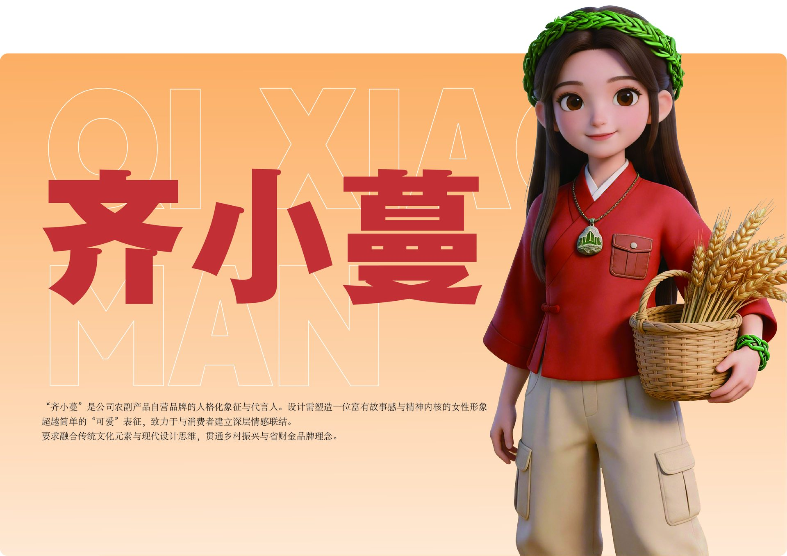
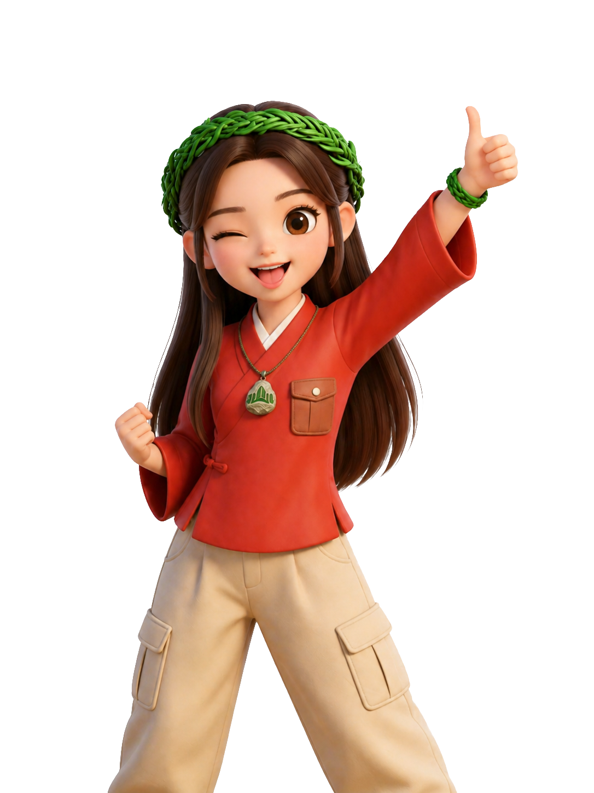
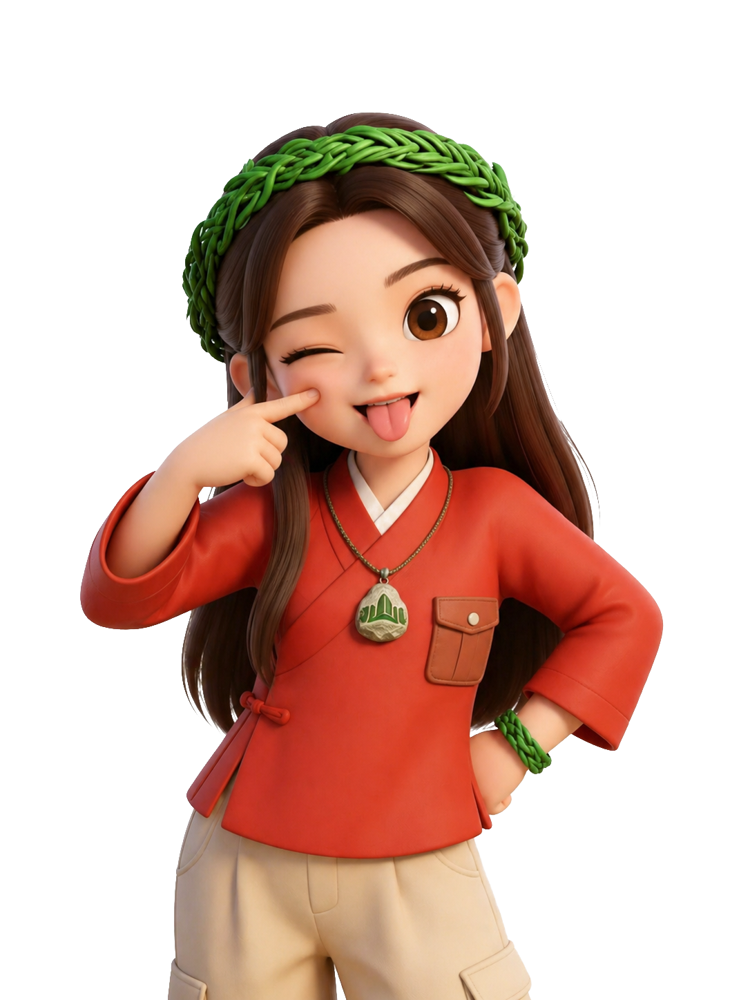
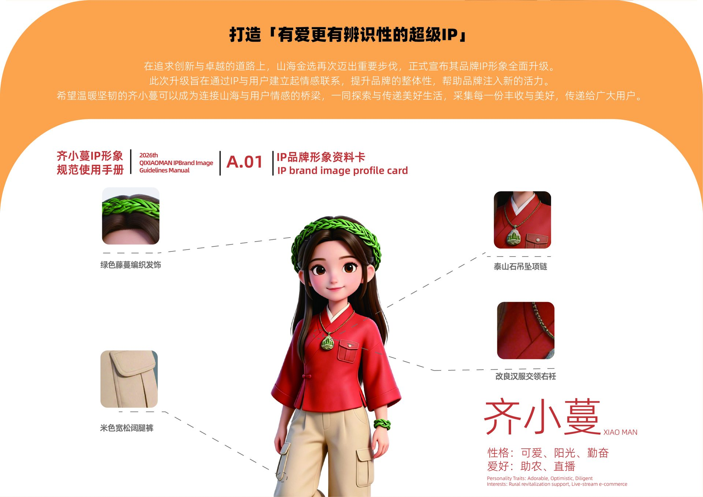
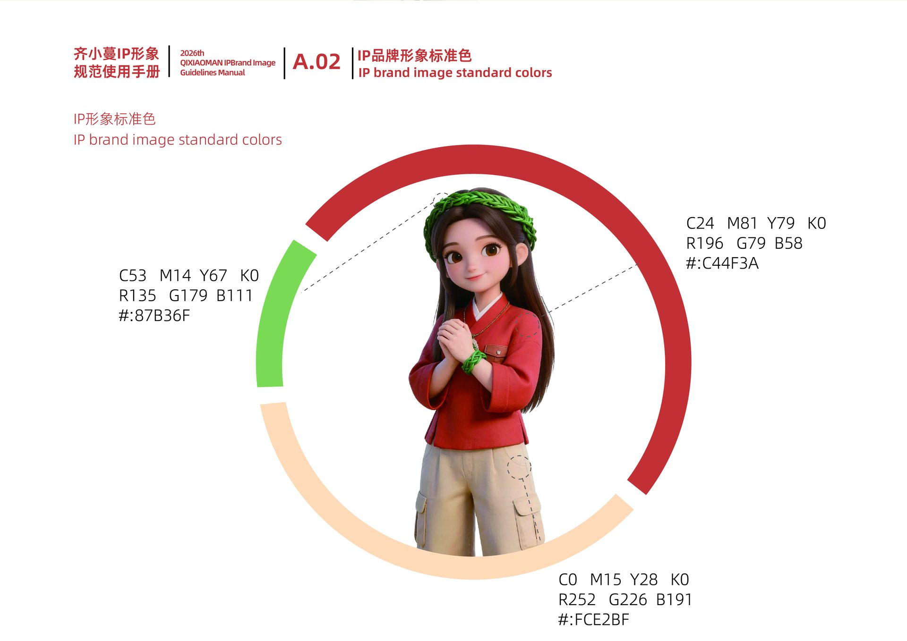
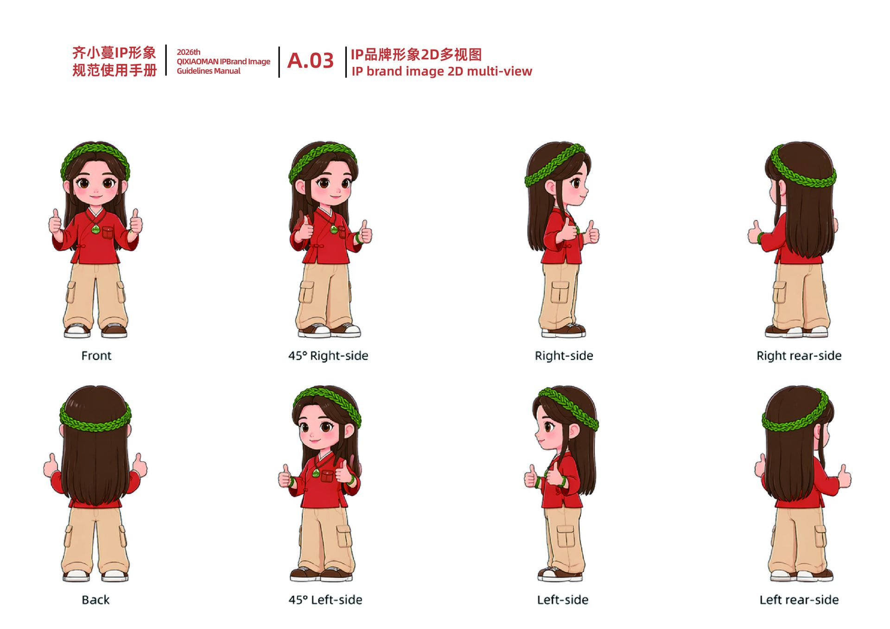
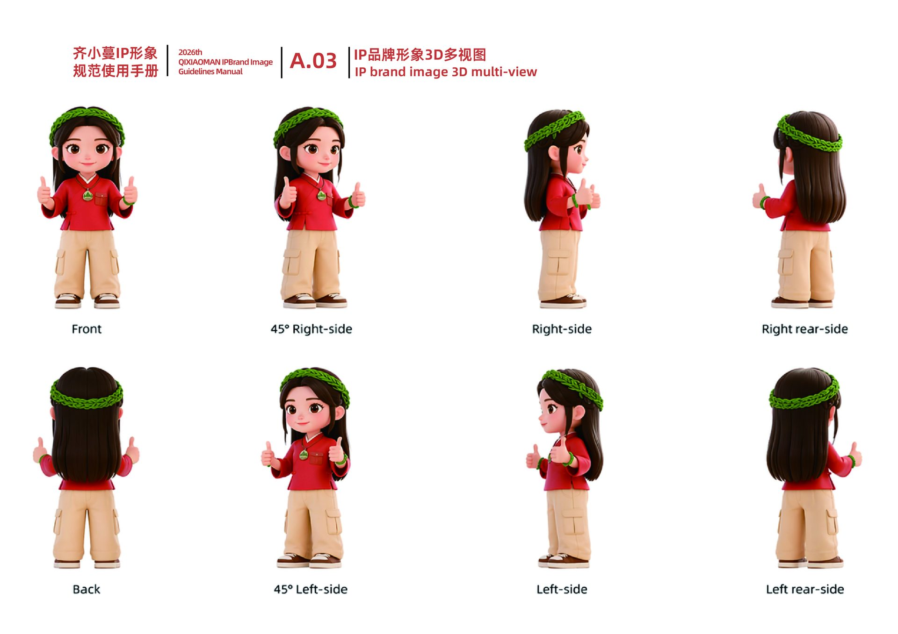
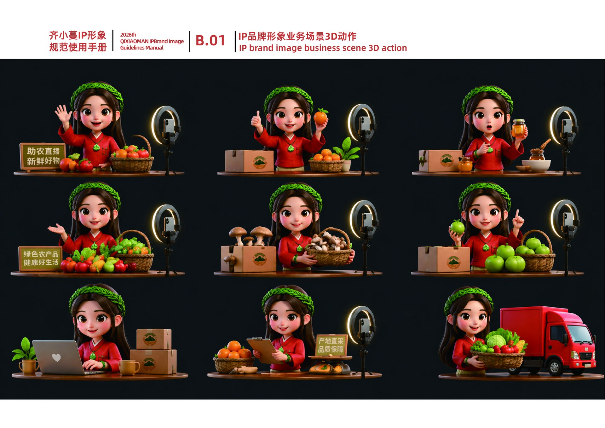

works / qi-xiaoman
QI XIAOMAN 齐小蔓
农产品品牌人格化 IP 视觉全案 · BRAND IP & VI
以 3D 卡通角色为核心的农产品品牌人格化 IP：从形象资料卡、标准色、2D/3D 多视图到直播业务场景动作的完整规范手册，以及三视图、表情系统与多场景商业应用的一体化视觉全案。

规范手册主视觉 / Guidelines Key Visual
「齐小蔓」是山海金选农副产品自营品牌的人格化形象与代言人。暖橙底色上超大品牌字与 3D 角色互相咬合，超可爱的外表之下是「有故事感、有精神内核」的品牌资产设计。


角色 3D 立姿展示 / Character Poses in 3D
两个标准立姿以 3D 视差方式呈现：移动鼠标，卡片随视角倾斜，角色从卡面浮起，投影实时呼应——在网页里还原手办的摆弄感。

形象资料卡 / Profile Card · A.01
绿色藤蔓编织发饰、泰山石吊坠项链、改良汉服交领右衽与米色宽松阔腿裤——四件识别件构成角色的文化锚点；性格设定：可爱、阳光、勤奋，爱好助农与直播。

形象标准色 / Standard Colors · A.02
砖红 #C44F3A、草绿 #87B36F、暖米 #FCE2BF 三色构成品牌色彩语言，色值以 CMYK / RGB / HEX 三规范并行标注，保证线上线下触点一致。

2D 多视图 / 2D Multi-view · A.03
正面、45° 侧面、正侧与背面的 2D 标准视图，锁定角色比例、发型与服饰细节，是插画延展与表情包制作的基础资产。

3D 多视图 / 3D Multi-view · A.03
3D 渲染的多视角标准像，补足材质与体积信息，为手办、周边与动态镜头提供直接可用的三维基准。

业务场景 3D 动作 / Business Scene Actions · B.01
助农直播间九连动作：打招呼、试吃、展示罐装好物、开箱打包、对账盘货到发货装车——把「可爱」落成可复用的电商运营资产。

角色资产：三视图与表情图谱 / Turnarounds & Expressions
标准三视图锁定角色比例与服饰细节；表情与姿态矩阵建立情感表达库，配套色彩规范与应用示意，让 IP 在所有触点中保持一致、可信、可延展。

场景应用与周边衍生 / Applications & Merchandise
IP 的价值在于「被使用」。节日造型进入电商海报与营销场景，表情包与周边商品渗透日常，构建从平面到商品、线上到线下的完整内容触达链路。